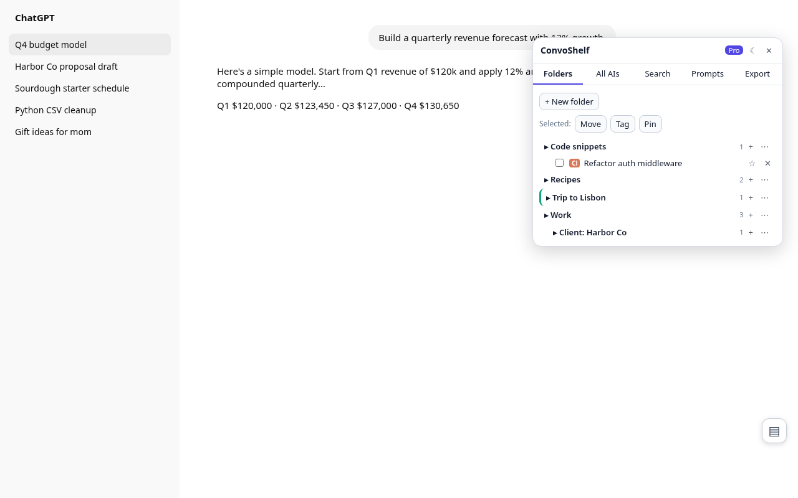
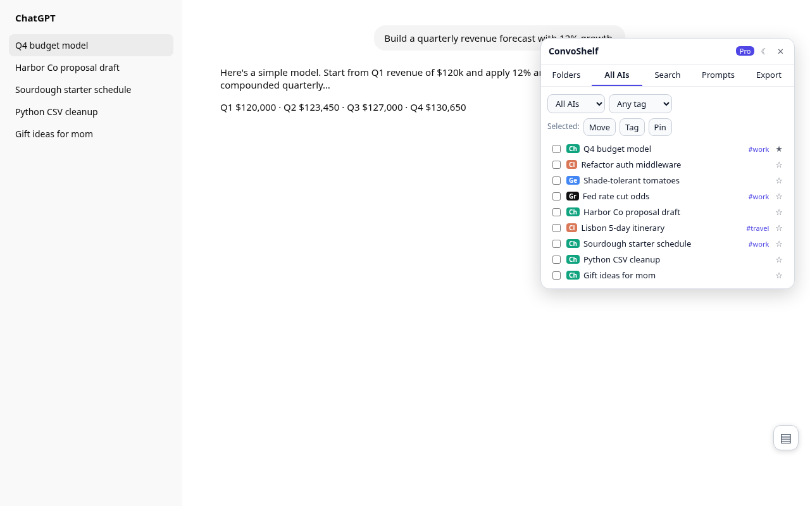

Search your ChatGPT, Claude, Gemini and Grok chats. No account. $4.99 once, no subscription.
ConvoShelf adds folders, tags, search and export across four AI sites in Chrome, Edge and Firefox. Search opened or indexed chats and locally imported ChatGPT or Claude exports. Gemini indexing is partial. No ConvoShelf account or chat-library server. Optional Pro browser sync uses your browser vendor.
Add to Chrome, free Free plan. Pro is $4.99 once.Version 1.3.0 was submitted to the Chrome Web Store on November 26, 2026 and reaches each store after its review; until then the stores offer 1.2.0. Also on Firefox and Edge.
Short vertical: all four AIs in one list. Fictional demo chats.

What it does
Pro adds subfolders three levels deep. Drag a chat from the sidebar onto a folder, or press + to file the open one. Works on chats inside ChatGPT Projects.
Put a Claude chat and a ChatGPT chat in the same folder. Tag and pin across all of them.
Save prompts you reuse and drop them into the chat box with one click. A saved prompt can be a chain of steps, or use blanks such as {{topic}}. ConvoShelf puts the text in the box; you press Send.
Press Alt+Shift+K (if your browser set that key; you can change it in its shortcut settings) or the ⌨ button in the panel to jump to a chat, run a prompt, file the open chat or export it.

Pricing
| Feature | Free | Pro, $4.99 once |
|---|---|---|
| Folders and subfolders | Unlimited top-level folders | Unlimited folders + subfolders (3 levels) |
| Tags, pins, drag and drop, cross-AI list | Yes | Yes |
| Full-text search | Opened/indexed chats, no live chat-count cap; ChatGPT and Claude imports up to 20,000 combined; Show more in pages of 50 | Same search, plus AI/folder/tag/date filters |
| Import a ChatGPT or Claude export | Yes; nothing is uploaded | Yes, plus search filters on imported chats |
| Export open chat | Markdown, PDF | Markdown, PDF, JSON |
| Bulk export (folder or everything) | - | Markdown, JSON, folder or selection ZIP |
| Bulk move, tag, pin | - | Yes |
| Saved prompts and chains | 10 (a chain counts as one); blanks such as {{topic}} | Unlimited |
| Command palette | Yes | Yes |
| Clips | 10 | Unlimited, plus clip export |
| Handoff | 1 a day | One-click handoff |
| Folder colors | - | Yes |
| Backup and restore, dark mode, shortcuts | Yes | Yes |
Pro is a single payment, no subscription. Your license key unlocks it on your devices.
The Shelf family
Same idea for each list: folders, search and export, kept in your browser. Free plan, Pro $4.99 once per tool.
Folders, search and export for ChatGPT, Claude, Gemini and Grok chats.X Bookmarks Shelf
Search your X bookmarks, sort them into folders, and export them to Markdown, CSV or JSON.Saved Shelf for Reddit
Search your saved Reddit posts and comments, sort them into folders, and keep a copy past the 1,000-item cap.Watch Later Shelf
Search YouTube Watch Later by title or channel, filter by length or watched, find duplicates and bulk-remove videos with no monthly cap.
Questions
Does ConvoShelf add folders to Gemini and Grok chats?
Yes. ConvoShelf adds folders, tags and pins on gemini.google.com and grok.com, and shows Gemini and Grok chats in the same list as your ChatGPT and Claude chats, so one folder can hold chats from all four. Top-level folders are unlimited on the free plan; subfolders (up to 3 levels) are Pro, which is $4.99 once.
Where are my chats stored?
Chats stay in this browser’s extension storage. No ConvoShelf account or library-hosting server. Optional Pro browser sync shares structure and saved prompts/chains through your browser vendor; transcripts and clip bodies do not sync.
Which AI sites does ConvoShelf work with?
ChatGPT (including Projects), Claude, Gemini and Grok.
Is Pro a subscription?
No. Pro is a single $4.99 payment.
What does the free plan include?
Unlimited top-level folders (creating new subfolders is Pro; existing ones stay usable), tags, pins, search and indexing, ChatGPT and Claude export imports, Show more results, single-chat Markdown/PDF, message Copy as Markdown, supported site archive, and up to 10 eligible site deletes per run. Includes 10 saved prompts (a chain counts as one), 10 clips, one handoff copy per UTC day, prompt blanks, command palette, backup/restore, panel placement and tour. Gemini indexing is partial. Imports and device storage have limits. ConvoShelf never presses Send.
How do I delete my ConvoShelf data?
Open ConvoShelf's options page and press Delete all ConvoShelf data. It removes folders, tags, prompts, saved chat text and any imported chats, and keeps a Pro license.
Can I archive or delete chats on the AI site?
Archive or delete on the AI site only when you confirm the exact count and titles. Archive is available on ChatGPT. Delete is available on ChatGPT, Claude accounts with one organization, and Grok; Gemini site actions are unavailable. Delete requires typing DELETE <count>. Archive is free; delete is free for up to 10 eligible chats per run, Pro above 10. Runs are paced and cancellable, skip other-site chats, and show per-chat results. Options has a global Dry-run mode that makes no site-action requests. Pro offers Export these first before deletion. Deleting on the site cannot be undone; an export restores a local copy only.
What does browser sync share?
Browser sync is Pro and off by default. It uses your browser vendor’s sync account for folders, filing, tags, pins, saved prompts and chains (including saved text), and clip references. Chat titles, transcripts, message text, snippets, clip bodies, labels and anchors, settings and licenses do not sync. Text you save in a prompt does sync. New devices show untitled chat and generic clip references until read locally. The library must fit within 100 KB. Turning sync off stops updates on this device and keeps local and existing vendor sync data. Chrome, Edge and Firefox use separate services.
Which network requests does ConvoShelf make?
Network requests: Polar license verification sends the license key and ConvoShelf organization ID when you confirm a key and on later rechecks (normally every three days, with 12-hour retries after a negative validation; the alarm checks every 12 hours). Optional site fixes request https://convoshelf.com/fixes/v1.json without cookies, identifiers, query parameters or chat data; the default-on switch can be turned off. No site-fix request is made at first start or install. The first fetch happens only after you have seen the notice containing the “Get site fixes from convoshelf.com” off switch (we record when it was shown); then at most every 12 hours. If you turn it off before then, ConvoShelf never fetches while it is off. The server can see your IP address. User-started indexing, full export and confirmed archive/delete make requests only to the AI site you are signed into, using that site’s session, never to ConvoShelf. Pro browser sync, if turned on, goes through the browser vendor’s own sync service. ConvoShelf never presses Send.
What else changes in 1.3.0?
Choose the panel’s left or right side or collapse it to a rail. It avoids the detected native chat list and may wait for space on a narrow window. A skippable four-step tour helps new installs; updates show a one-time What’s new in 1.3.0 note. The same optional rating prompt appears after at least three days and either ten distinct filed chats or three searches with results, with Rate, Not now and Don’t ask again. ConvoShelf 1.3.0 shows English everywhere: the earlier partial translations (Arabic, German, Spanish, French, Brazilian Portuguese and Japanese) were removed.